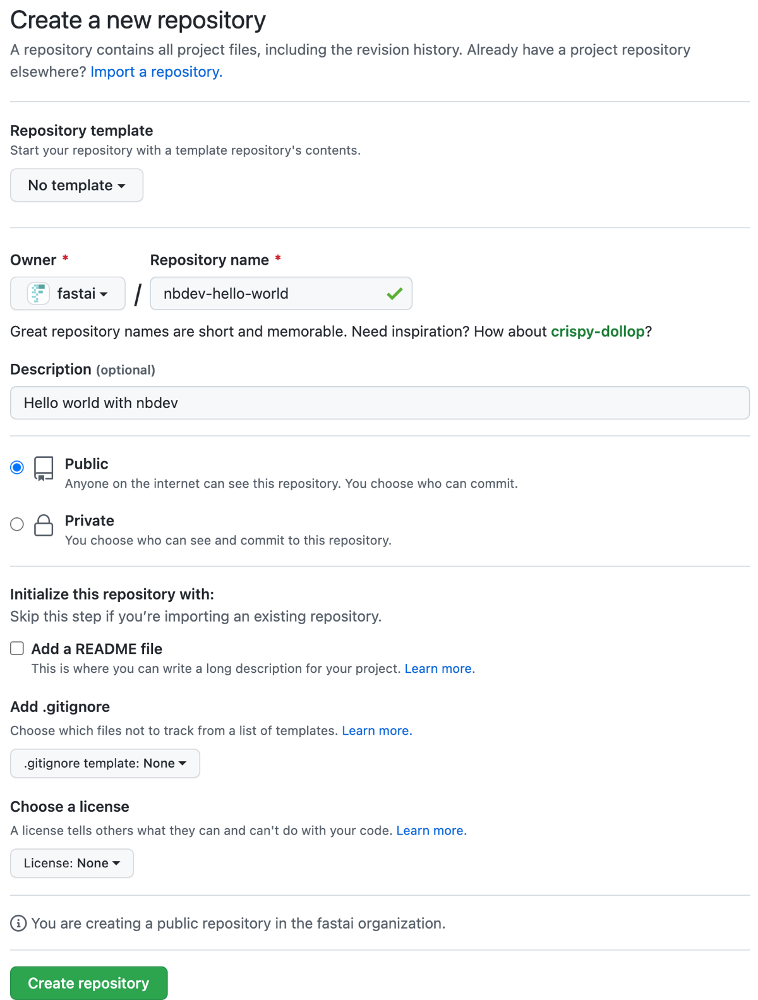

say_hello("Isaac")'Hello Isaac!'The written tutorial below shows you how to create a Python package from scratch using nbdev.
Alternatively, you can watch this video tutorial where Jeremy Howard and Hamel Husain guide you through a similar process step by step:
You’ll need the following software to complete the tutorial, read on for specific installation instructions:
If you haven’t worked with Python before, we recommend getting started with the Anaconda Individual Edition and using the conda package manager.
Note that you will only need to follow the steps in the installation section once per environment. If you create a new repo, you won’t need to redo these.
Launch a terminal and install JupyterLab by entering:
conda install -c conda-forge -y jupyterlab…or
pip install jupyterlab…if you’re using the pip package manager.
You can now launch Jupyter by entering:
jupyter labThis should open JupyterLab in a new browser tab:

The next step is to install nbdev itself. JupyterLab comes with its own terminal, so we’ll use that moving forward.
In the Launcher, scroll down to the “Other” section, then click “Terminal”. If the Launcher isn’t opened, you can open it by clicking “File” → “New Launcher”.
A new tab should open with a blank terminal – it might not look exactly the same, depending on how your shell is configured:

For Mac and Linux, enter:
conda install -c fastai -y nbdev…or for Mac, Linux and Windows:
pip install nbdev…if you’re using pip.
nbdev provides a command to install the latest version of Quarto. In the terminal, enter:
nbdev_install_quartoYour password may be requested at this point. Since nbdev is open source, you can read the source code of this command to verify that it isn’t doing anything malicious. Or, if you prefer, you may instead follow Quarto’s official installation instructions.
Quarto provides its own JupyterLab extension that allows it to render Quarto markdown content.
For example, here is their notebook demonstrating some of its features:

Install the extension by entering:
pip install jupyterlab-quartoNote that the jupyterlab-quarto package is not currently available via conda.
You’re all setup and ready to go! Installing these tools may take some time, but you’ll only need to do it once. Next, we’ll setup an nbdev repo for your specific project.
By the end of this section you’ll have your own nbdev repo with tests, continuous integration, streamlined PyPI & conda packaging, and a documentation website.
Create an empty GitHub repo using the convenient link github.com/new. If you get stuck, you might find GitHub’s Create a repo page helpful.
Remember to add a description, since nbdev will use that later. Don’t add a README file, .gitignore, or license just yet.
If you’re using the web interface, it should look something like this (with your own repository name and description) before you click “Create Repository”:

You should then be redirected to your new repo:

GitHub’s web interface is a great way to get started. As you grow more experienced, you might want to explore the GitHub CLI (command line interface). We often prefer to use command line tools for repetitive tasks where we’re likely to make mistakes. Having those tasks written as small scripts in your terminal means that you can repeat them with little effort.
Now clone your repo from the Jupyter terminal you started earlier (or create a new terminal following those instructions if needed). If you get stuck here, you might find GitHub’s Cloning a repository page helpful.
Since we created a repo named nbdev-hello-world with the fastai user, we can clone it as follows:
git clone https://github.com/fastai/nbdev-hello-world.gitThen cd (change directory) to our repo:
cd nbdev-hello-worldYou may have seen this message while cloning:
You appear to have cloned an empty repository.…since the repo is completely empty. Let’s add some files!
nbdev provides the nbdev_new command to initialise an empty git repository. It’ll infer information about your project from git and GitHub, and ask you to input anything remaining. It will create files in your repo that:
Initialise your nbdev repo by entering:
nbdev_newIt may ask you to enter information that it couldn’t infer from git or GitHub.
nbdev_new assumes that your package name is the same as your repo name (with - replaced by _). Use the --lib_name option if that isn’t the case.
Double-check your settings.ini file to ensure that it has all of the correct information. Then commit and push your additions to GitHub:
git add .
git commit -m'Initial commit'
git pushnbdev hosts your docs on GitHub Pages—an excellent (and free!) way to host websites.
nbdev uses GitHub Pages by default because its easily accessible. However, you can use any host you like. See these docs for more information.
You need to enable GitHub Pages for your repo by clicking on the “Settings” tab near the top-right of your repo page, then “Pages” on the left, then setting the “Branch” to “gh-pages”, and finally clicking “Save”.
It should look similar to this after you click “Save”:

If you don’t see a “gh-pages” branch, wait a few minutes and reload the page. It should automatically be set up for you.
Now it’s time to see all of the goodies nbdev gives you!
Open GitHub Actions by clicking the “Actions” tab near the top of your repo page. You should see two workflow runs:

If you opened this page shortly after pushing your initial commit, the runs may not have a green check (✅) because they’re still “In progress” or “Queued”. That’s no problem, they shouldn’t take much more than a minute to complete.
If you see a red cross (❌), that means something failed. Click on the cross, then click “Details”, and you’ll be able to see what failed. If you can’t figure out what’s wrong, search the forum in case someone else resolved the same issue, otherwise create a new post describing your issue in as much detail as you can, and we’ll try our best to help you. Remember that including a link to an actual repo and/or GitHub Action is the best way for us to quickly identify what’s wrong.
What do these workflows do?
We provide these basic workflows out-of-the-box, however, you can edit their corresponding YAML files in the .github/workflows/ folder to your liking.
When you enable GitHub Pages you should see a new workflow run: “pages build and deployment”. As the name suggests, this workflow deploys your website contents to GitHub Pages.

Wait for the workflow run to complete, then open your website. By default it should be available at: https://{user}.github.io/{repo}. For example, you can view fastai’s nbdev-hello-world docs at https://fastai.github.io/nbdev-hello-world.

You now have a base nbdev repo with continuous integration and hosted documentation! Here’s a recap of the steps you took:
nbdev_newIn this section, you’ll make your first edit to the repo you created in First steps.
Step one when working with Jupyter notebooks in a new repo is to install nbdev’s hooks (you can think of “hooks” as plugins or extensions to an application).
Install them by entering this command in your terminal:
nbdev_install_hooksThe clean hook currently only supports Jupyter Notebook and JupyterLab. If you’re using VSCode, you can try the experimental nbdev VSCode extension. Otherwise, you might also want to try nbdev’s pre-commit hooks.
See Git-friendly Jupyter for more about how nbdev hooks work and how to customise them. Here’s a short summary:
nbdev’s git hooks work on any git repo, even if it doesn’t use the broader nbdev system.
You should now create your package from your notebook by running:
nbdev_exportThis will create Python modules for your notebooks. These modules will make up the contents of your Python package.
You might have noticed that nbdev_new created a Python package in your repo. In our case, it was automatically named nbdev_hello_world by using our repo name nbdev-hello-world and replacing - with _ to make it a valid Python package.
The next step is to install your package by entering this into your terminal:
pip install -e '.[dev]'This is the recommended way to make a Python package importable from anywhere in your current environment:
-e – short for “editable”, lets you immediately use changes made to your package without having to reinstall, which is convenient for development.. – refers to the current directory.[dev] – includes “development” requirements: other packages that your notebooks use solely for documentation or testing.nbdev is an interactive programming environment that values fast feedback loops. The nbdev_preview command helps achieve this by using Quarto to render your docs on your computer and keep them updated as your edit your notebooks.
Start the preview by entering this into your terminal:
nbdev_previewIt may say Preparing to preview for a few seconds while it gets started, and will eventually display something like:
Watching files for changes
Browse at http://localhost:3000/Click the link to open the preview in a new browser tab. It should look exactly like your online docs.
We often find it useful to keep a preview window open on the side while we’re editing our notebooks in Jupyter.
Now, open the nbs/00_core.ipynb file (generated by running nbdev_new earlier) in Jupyter. You don’t have to start your notebook names with a number, but we find it helpful to show the order that your project should be read in – even though it could have been created in a different order.
You’ll see something that looks a bit like this:
core
Fill in a module description here
#| default_exp coreLet’s explain what these special cells means:
default_exp which decides which module this notebook will export to (see the Directives explanation for more). Currently, it exports to the core module.Next, rename the notebook, replace the title and description, and change the default export module for your own project.
Once you’re done, save the notebook. The live preview started in the previous section should update with your latest changes.
Rerun all cells in your notebook to ensure that they work, and to export the updated modules.
We find the “restart kernel and run all cells” Jupyter command (the ⏩ button) so invaluable that we bind it to a keyboard shortcut. A common criticism of notebooks is that out-of-order execution leads to irreproducible notebooks. In our experience, making “restart and rerun” a habit solves this problem.
Running the notebook exports Python modules because of the last cell which contains:
#| hide
import nbdev; nbdev.nbdev_export()What does this mean?
#| hide is a directive (like #| default_exp) which excludes a cell from both your exported module and docsnbdev_export is the command used to export your notebooks to Python modules.We recommend including a cell like this at the bottom of all of the notebooks you want to export.
Remember to delete any unused modules that aren’t exported by a notebook or otherwise needed by your package. This is likely to happen if you change the default export of a notebook – nbdev doesn’t remove the old module. This is intended, since nbdev is designed to work with hybrid packages that use .py modules (with no corresponding notebook) as well as those exported from notebooks.
Add a new code cell below the #| default_exp cell with a function. For example:
#| export
def say_hello(to):
"Say hello to somebody"
return f'Hello {to}!'Notice how it includes #| export at the top – this is a directive (like #| default_exp) that tells nbdev to include the cell in your exported module and in your documentation.
The documentation should look like this:
say_hello (to)
Say hello to somebody
One of the superpowers of notebook-driven development is that you can very easily add examples, tests, and documentation right below your code.
Include regular code cells, and they’ll appear (with output) in your docs, for example:
say_hello("Isaac")'Hello Isaac!'This is a test too! When you run nbdev_test it will execute this cell (and all other test cells) and fail if they raise any exceptions.
For tests, it’s preferred to use more explicit asserts:
assert say_hello("Hamel") == "Hello Hamel!"…or functions from fastcore.test, which behave like assert but also display the actual and expected values if they differ:
from fastcore.test import *test_eq(say_hello("Hamel"), "Hello Hamel!")Another superpower of notebook-driven development is that your examples can include plots, images, and even JavaScript widgets. For example, here’s an SVG circle:
from IPython.display import display,SVGdisplay(SVG('<svg height="100" xmlns="http://www.w3.org/2000/svg"><circle cx="50" cy="50" r="40"/></svg>'))
Before commiting your changes to GitHub we recommend running nbdev_prepare in the terminal, which bundles the following commands:
nbdev_export: Builds the .py modules from Jupyter notebooksnbdev_test: Tests your notebooksnbdev_clean: Cleans your notebooks to get rid of extreanous output for gitnbdev_readme: Updates your repo’s README.md file from your index notebook.Now you’re ready to personalize your documentation home page and README.md file; these are both generated automatically from index.ipynb. Open Jupyter, then click on nbs/index.ipynb to open it.
We recommend including a longer description about what your package does, how to install it, and how to use it (with a few examples which import and use your package). Remember, examples can be code cells with real outputs rather than plain markdown text – they’ll double as tests too!
You can now commit and push your changes to GitHub. As we mentioned before, always remember to run nbdev_prepare before you commit to ensure your modules are exported and your tests pass. You can use git status to check which files have been generated or changed. Then:
git add .
git commit -m 'Add `say_hello`; update index' # Update this text with your own message
git pushThis will kick-off your GitHub Actions. Wait a minute or two for those to complete, then check your updated repo and documentation.
Congratulations, you’ve used all of the basics needed to build delightful projects with nbdev! Here’s a recap of the steps you took:
nbdev_install_hookspip install -e '.[dev]'nbdev_previewnbs/00_core.ipynbnbdev_preparenbs/index.ipynb with your own informationRead on to learn about more advanced nbdev functionality. Also see our explanations for deep-dives on specific topics, as well as our other tutorials.
Create a class in 00_core.ipynb as follows:
#| export
class HelloSayer:
"Say hello to `to` using `say_hello`"
def __init__(self, to): self.to = to
def say(self):
"Do the saying"
return say_hello(self.to)This will automatically appear in the docs like this:
HelloSayer (to)
Say hello to to using say_hello
However, methods aren’t automatically documented. To add method docs, use show_doc:
show_doc(HelloSayer.say)HelloSayer.say ()
Do the saying
And add some examples and/or tests:
o = HelloSayer("Alexis")
o.say()'Hello Alexis!'Notice above there is a link from our new class documentation to our function. That’s because we used backticks in the docstring:
"Say hello to `to` using `say_hello`"These are automatically converted to hyperlinks wherever possible. For instance, here are hyperlinks to HelloSayer and say_hello created using backticks.
Since you’ll be often updating your modules from one notebook, and using them in another, it’s helpful if your notebook automatically reads in the new modules as soon as the Python file changes. To make this happen, just add these lines to the top of your notebook:
%load_ext autoreload
%autoreload 2If your module requires other modules as dependencies, you can add those prerequisites to your settings.ini in the requirements section. The requirements should be separated by a space and if the module requires at least or at most a specific version of the requirement this may be specified here, too.
For example if your module requires the fastcore module of at least version 1.0.5, the torchvision module of at most version 0.7 and any version of matplotlib, then the prerequisites would look like this:
requirements = fastcore>=1.0.5 torchvision<0.7 matplotlibIn addition to requirements you can specify dependencies with other keywords that have different scopes. Below is a list of all possible dependency keywords:
requirements: Passed to both pip and conda setuppip_requirements: Passed to pip setup onlyconda_requirements: Passed to conda setup onlydev_requirements: Passed to pip setup as a development requirementFor more information about the format of dependencies, see the pypi and conda docs on creating specifications in setup.py and meta.yaml, respectively.
Behind the scenes, nbdev uses that standard package setuptools for handling installation of modules. One very useful feature of setuptools is that it can automatically create cross-platform console scripts. nbdev surfaces this functionality; to use it, use the same format as setuptools, with whitespace between each script definition (if you have more than one).
console_scripts = nbdev_export=nbdev.cli:nbdev_exportIf you want people to be able to install your project by just typing pip install your-project then you need to upload it to pypi. The good news is, we’ve already created a fully pypi compliant installer for your project! So all you need to do is register at pypi (click “Register” on pypi) if you haven’t previously done so, generate an API token (go to Account settings and click “Add API token”) and then create a file called ~/.pypirc with your token details. It should have these contents:
[pypi]
username = __token__
password = your_pypi_tokenAnother thing you will need is twine, so you should run once
pip install twineTo upload your project to pypi, just type nbdev_pypi in your project root directory. Once it’s complete, a link to your project on pypi is displayed.
Similar to pip install support, we have provided an anaconda compliant installer to upload your project to anaconda. Once uploaded, your package can be installed by typing conda install -c your_anaconda_username your-project.
You need to register at anaconda (fill out the form to Sign Up) which will create a username and password. You will then need to install the following packages
pip install anaconda-client conda-build conda-verifyBefore running the anaconda uploader, you need to login to conda using the CLI command (you will be prompted to enter your username and password)
anaconda loginTo upload to anaconda, just type nbdev_conda in your project root directory.
The command nbdev_release_both from the root of your nbdev repo will upload your project to both conda and pypi.
There are two jupyter notebook extensions that I highly recommend when working with projects like this. They are:
Navigate menu item it adds to your notebooks, or the TOC sidebar it adds. These can be modified and/or hidden using its settings.nbdev supports equations (using Quarto). You can include math in your notebook’s documentation using the following methods.
Using $$, e.g.:
\sum_{i=1}^{k+1}iWhich is rendered as:
_{i=1}^{k+1}i
Using $, e.g.:
This version is displayed inline: \sum_{i=1}^{k+1}i . You can include text before and after.Which is rendered as:
This version is displayed inline: _{i=1}^{k+1}i . You can include text before and after.
For more information, see the Quarto Docs
Don’t forget that nbdev itself is written in nbdev! It’s a good place to look to see how fast.ai uses it in practice, and get a few tips. You’ll find the nbdev notebooks here in the nbs folder on Github.
nbdev supports most Quarto features. We encourage you to read the Quarto documentation to discover all the features available to you. For example, this is how you can incorporate Graphviz:
It is worth taking a look at the documentation for figures, callouts, markdown, widgets, layouts, conditional content and quarto extensions to name a few useful things we have encountered.